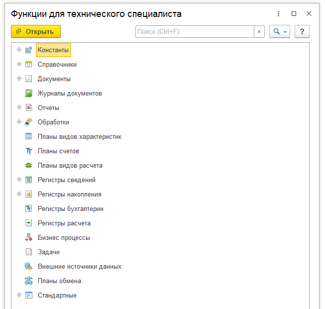
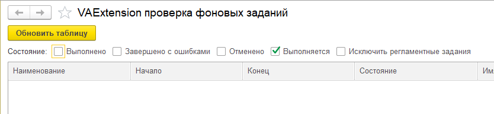
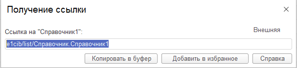
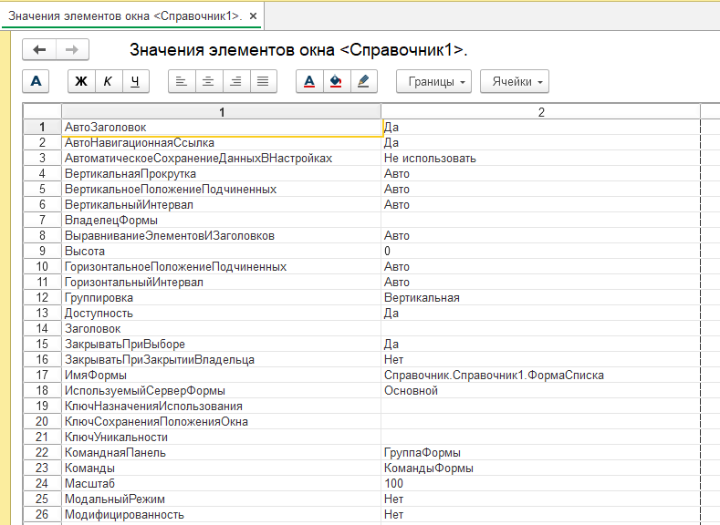
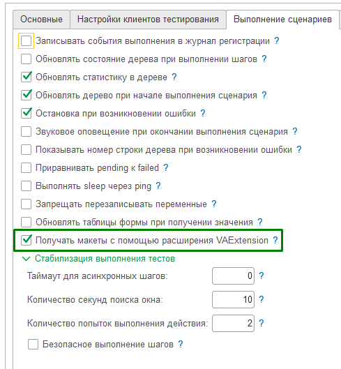
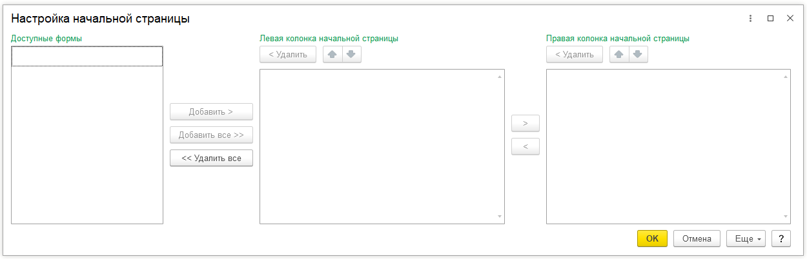

Расширение VAExtension¶
Расширение "VAExtension" предназначено для решения ряда технологических задач при запуске автотестов. Его необходимо установить в базу, в которой будет запускаться клиент тестирования. Исходники расширения можно скачать тут. Собранный cfe файл можно скачать в секции релизов. Возможности расширения:
- Открытие окна "Функции технического специалиста" (Все функции).
- Выполнить ожидание завершения фоновых заданий на стороне клиента тестирования.
- Получить навигационную ссылку окна для любых окон, у которых возможно получить навигационную ссылку.
- Выполнить произвольный код на стороне клиента тестирования (клиентский код и серверный код).
- Вычислить произвольное выражение на стороне клиента тестирования (клиентский код и серверный код).
- Получить произвольное значение из реквизита формы или объекта связанного с формой.
- Изменять произвольные данные формы, доступные для записи.
- Выполнить метод текущей формы.
- Получать макеты из формы клиента тестирования без использования временных файлов. Также работает в web клиенте.
- Открытие окна "Настройка начальной страницы"
- Взаимодействие с активным окном.
- Сортировка таблиц динамических списков
- Очистка табличного документа
- Нажать на гиперссылку в поле HTML документа
- Проверить признак модифицированности формы
- Проверить признак формы "ТолькоПросмотр"
- Получить состояние объекта (Проведен, ПометкаУдаления, Код, Дата, Номер)
- Открыть внешнюю обработку или отчет
- Запомнить ID UI Automation элемента формы в переменную
- Установка типа элементу формы
- Эмулятор работы сканера штрихкода
- Эмулятор внешних событий в модуле приложения
- Программное проведение документов и отмена проведение документов
- Программное получение состояния объекта (справочника или документа)
- Программное сравнение варианта отчета с эталоном
- Запомнить навигационные ссылки, чтобы потом пометить на удаление объекты по ним
- Как установить текст письма в ДО
- Как узнать какие расширения установлены в клиент тестирования
- Открытие текстового файла как будто это сделал пользователь.
- Открытие табличного документа как будто это сделал пользователь.
- Отключение отката текста введенного в поле во время теста.
- Получение версии подсистемы.
- Прочитать текущий вариант интерфейса клиента тестирования (Версия8_2, Такси, Версия8_5)
- Проверить вариант интерфейса клиента тестирования
- Проверить запущен клиент тестирования в файловой базе или клиент серверной
- Сохранить в переменную ссылку на справочник/документ и т.д. и потом открыть ссылку в клиенте тестирования
1. Открытие окна "Функции технического специалиста" (Все функции).¶
Нужно использовать шаг

2. Выполнить ожидание завершения фоновых заданий на стороне клиента тестирования.¶
Нужно использовать шаги
И Я жду завершения выполнения всех фоновых заданий (Расширение)
И Я жду завершения выполнения всех фоновых заданий в течение 100 секунд (Расширение)

3. Получить навигационную ссылку окна для любых окон, у которых возможно получить навигационную ссылку.¶
Нужно использовать шаг

4. Выполнить произвольный код на стороне клиента тестирования (клиентский код и серверный код).¶
Нужно использовать шаги
И я выполняю код встроенного языка (Расширение)
И я выполняю код встроенного языка на сервере (Расширение)
И я выполняю код встроенного языка на клиенте через буфер обмена (Расширение)
И я выполняю код встроенного языка на сервере через буфер обмена (Расширение)
И я выполняю код встроенного языка на сервере через буфер обмена в привилегированном режиме (Расширение)
И я выполняю код встроенного языка на клиенте через файл события (Расширение)
И я выполняю код встроенного языка на сервере через файл события (Расширение)
И я выполняю код встроенного языка на сервере через файл события в привилегированном режиме (Расширение)
И я ожидаю "10" секунд результат обработки последнего события через файл и запоминаю результат в переменную "ИмяПеременной"(Расширение)
Для работы шага через файл события требуется предварительно запустить мониторинг каталога с событиями на стороне тестируемого приложения Шаг запуска:
Шаг окончания работы5. Вычислить произвольное выражение на стороне клиента тестирования (клиентский код и серверный код).¶
Нужно использовать шаги
И Я запоминаю значение выражения 'ВыражениеВстроенногоЯзыка' в переменную "ИмяПеременной" (Расширение)
И Я запоминаю значение выражения на сервере 'ВыражениеВстроенногоЯзыка' в переменную "ИмяПеременной" (Расширение)
- Простой вариант вычисления выражения на сервере. Пример:
И Я запоминаю значение выражения на сервере 'МойОбщийМодульСервер.МойМетод()' в переменную 'Результат' (Расширение)
- Другой вариант выражения, когда используется переопределение ЗначениеДляВозврата
- Можно передать произвольный код в шаг вычисления выражения и этот код сам должен установить значение переменной ЗначениеДляВозврата. Пример, когда вычисляется выражение на клиенте:
И Я запоминаю в переменную 'Выражение' значение
"""bsl
а = 1;
б = 2;
ЗначениеДляВозврата = а + б;
"""
И Я запоминаю значение выражения '$Выражение$' в переменную 'Результат' (Расширение)
- Ещё пример выражения, когда используется переопределение ЗначениеДляВозврата
- Можно передать произвольный код в шаг вычисления выражения и этот код сам должен установить значение переменной ЗначениеДляВозврата. Пример, когда вычисляется выражение на сервере:
И Я запоминаю в переменную 'Выражение' значение
"""bsl
Запрос = Новый Запрос;
Запрос.Текст =
"ВЫБРАТЬ ПЕРВЫЕ 1
| Справочник1.Наименование КАК Наименование
|ИЗ Справочник.Справочник1 КАК Справочник1
|ГДЕ
| Справочник1.Код = ""000000001""
|УПОРЯДОЧИТЬ ПО Код";
Выборка = Запрос.Выполнить().Выбрать();
Если Выборка.Следующий() Тогда
ЗначениеДляВозврата = Выборка.Наименование;
Иначе
ЗначениеДляВозврата = Неопределено;
КонецЕсли;
"""
И Я запоминаю значение выражения на сервере '$Выражение$' в переменную 'Результат' (Расширение)
- Следующий пример показывает как получить из клиента тестирования объект произвольного типа, например Массив, который содержит заголовки элементов формы текущего окна
И я запоминаю текущее окно как 'ЗаголовокОкна'
И Я запоминаю в переменную 'Выражение' значение
"""bsl
ТекОкно = VAExtensionКлиент.ПолучитьОкноПоЗаголовку("$ЗаголовокОкна$");
Массив = Новый Массив;
Для Каждого ТекЭлем Из ТекОкно.Элементы Цикл
Попытка
ТекЗаголовок = ТекЭлем.Заголовок;
Если ЗначениеЗаполнено(ТекЗаголовок) Тогда
Массив.Добавить(ТекЗаголовок);
КонецЕсли;
Исключение
Конецпопытки;
КонецЦикла;
ЗначениеДляВозврата = VAExtensionОбщегоНазначения.ЗаписатьОбъектJSON(Массив);
"""
И Я запоминаю значение выражения '$Выражение$' в переменную 'Результат' (Расширение)
И Я запоминаю значение выражения 'Ванесса.ПрочитатьОбъектJSON(Контекст.Результат)' в переменную 'Результат'
6.1 Получить произвольное значение из реквизита формы, объекта связанного с формой.¶
Для вывода текущих значений активного окна клиента тестирования нужно выполнить шаг. При этом на стороне менеджера тестирования появится печатная форма. Данный шаг нужно использовать для отладки и не нужно использовать в реальных сценариях.

6.2 Получить произвольное значение из реквизита формы, объекта связанного с формой.¶
Для получения значения произвольного реквизита формы нужно выполнить шаг.
И Я запоминаю значение текущего окна 'ВыражениеВстроенногоЯзыка' в переменную "ИмяПеременной" (Расширение)
7. Изменять произвольные данные формы, доступные для записи.¶
Для изменения значения произвольного реквизита текушей формы нужно выполнить шаг.
Выражение пишется в виде '_ТекущееОкно.Заголовок = "Новый заголовок"' или '_CurrentWindow.Caption = "New caption"'.- Пример. Изменение заголовка текущего окна клиента тестирования:
8. Выполнить метод текущей формы.¶
Для выполнения произвольного метода текщей формы нужно выполнить шаг.
Выражение пишется в виде '_ТекущееОкно.ОткрытьСправкуФормы()' или '_CurrentWindow.ОткрытьСправкуФормы()'.9. Получать макеты из формы клиента тестирования без использования временных файлов. Также работает в web клиенте.¶

При включении данной опции макеты, которые получает Vanessa Automation из клиента тестирования будут передаваться на сторону менеджера тестирования с помощью расширения. Это позволяет обойти проблему, что из web клиента макет можно прочитать только по ячейкам. При написании собственных шагов, работающих с табличными документами нужно использовать метод10. Открытие окна "Настройка начальной страницы.¶
Нужно использовать шаг

11. Взаимодействие с активным окном.¶
Нужно использовать шаги
И я запоминаю текущее окно как "ЗаголовокОкна"
И я выполняю код встроенного языка ( Расширение )
"""bsl
ТекОкно = VAExtensionКлиент.ПолучитьОкноПоЗаголовку("$ЗаголовокОкна$");
Список = ТекОкно.Список;
Сортировка = Список.КомпоновщикНастроек.Настройки.Порядок.Элементы;
Сортировка.Очистить();
УсловиеСортировки = Сортировка.Добавить(Тип("ЭлементПорядкаКомпоновкиДанных"));
УсловиеСортировки.Поле = Новый ПолеКомпоновкиДанных("Код");
УсловиеСортировки.ТипУпорядочивания = НаправлениеСортировкиКомпоновкиДанных.Возр;
Список.КомпоновщикНастроек.ЗагрузитьНастройки(Список.КомпоновщикНастроек.Настройки);
"""
Следующий пример показывает как получить из клиента тестирования объект произвольного типа, например Массив, который содержит заголовки элементов формы текущего окна
И я запоминаю текущее окно как 'ЗаголовокОкна'
И Я запоминаю в переменную 'Выражение' значение
"""bsl
ТекОкно = VAExtensionКлиент.ПолучитьОкноПоЗаголовку("$ЗаголовокОкна$");
Массив = Новый Массив;
Для Каждого ТекЭлем Из ТекОкно.Элементы Цикл
Попытка
ТекЗаголовок = ТекЭлем.Заголовок;
Если ЗначениеЗаполнено(ТекЗаголовок) Тогда
Массив.Добавить(ТекЗаголовок);
КонецЕсли;
Исключение
Конецпопытки;
КонецЦикла;
ЗначениеДляВозврата = VAExtensionОбщегоНазначения.ЗаписатьОбъектJSON(Массив);
"""
И Я запоминаю значение выражения '$Выражение$' в переменную 'Результат' (Расширение)
И Я запоминаю значение выражения 'Ванесса.ПрочитатьОбъектJSON(Контекст.Результат)' в переменную 'Результат'
12. Сортировка таблиц динамических списков¶
Нужно использовать шаги
И в таблице "ИмяТаблицы" текущего окна я устанавливаю сортировку по колонке "ИмяКолонки" по возрастанию (расширение)
И в таблице "ИмяТаблицы" текущего окна я устанавливаю сортировку по колонке "ИмяКолонки" по убыванию (расширение)
13. Очистка табличного документа¶
Нужно использовать шаг
14. Нажать на гиперссылку в поле HTML документа¶
Для нажатия по представлению гиперссылки, которое видит пользователь
И у поля с именем "ИмяЭлемента" я нажимаю гиперссылку по представлению "ЧастьПредставленияСсылки" (расширение)
И у поля с именем "ИмяЭлемента" я нажимаю гиперссылку по значению "ЧастьЗначенияСсылки" (расширение)
15. Проверить признак модифицированности формы¶
Нужно использовать шаги
И форма текущего окна имеет признак модифицированности (расширение)
И форма текущего окна не имеет признак модифицированности (расширение)
16. Проверить признак формы "ТолькоПросмотр"¶
Нужно использовать шаги
И форма текущего окна имеет признак только просмотр (расширение)
И форма текущего окна не имеет признак только просмотр (расширение)
17. Получить состояние объекта (Проведен, ПометкаУдаления, Код, Дата, Номер)¶
Некоторые свойства объектов, такие как ПометкаУдаления, Проведен могут не выведены на форму. Чтобы их получить из формы открытого объекта Справочника или Документа можно использовать шаг. После выполнения шага будут созданы соответствующие переменные.
18. Открыть внешнюю обработку или отчет¶
Для этого надо использовать шаг
19. Запомнить ID UI Automation элемента формы в переменную¶
Для этого надо использовать шаг
И я запоминаю элемент формы клиента тестирования "Заголовок элемента" в переменную "ИмяПеременной" UI Automation (расширение)
И я запоминаю элемент формы клиента тестирования с именем "ИмяЭлемента" в переменную "ИмяПеременной" UI Automation (расширение)
20. Установка типа элементу формы¶
Нужно использовать шаги
И я запоминаю текущее окно как "ЗаголовокОкна"
И я выполняю код встроенного языка ( Расширение )
"""bsl
ТекОкно = VAExtensionКлиент.ПолучитьОкноПоЗаголовку("$ЗаголовокОкна$");
Массив = Новый Массив();
Массив.Добавить(Тип("СправочникСсылка.Справочник1"));
ОписаниеТипа = Новый ОписаниеТипов(Массив);
ТекОкно.Элементы.РеквизитСУстановкойТипа.ОграничениеТипа = ОписаниеТипа;
"""
21. Эмулятор работы сканера штрихкода¶
Для этого надо использовать шаг
И я эмулирую сканирование штрихкода БПО "4670003110011" через буфер обмена
И я эмулирую сканирование штрихкода БПО "4670003110011" через файл события (Расширение)
И я ожидаю "10" секунд результат обработки последнего события через файл и запоминаю результат в переменную "ИмяПеременной"(Расширение)
И я генерирую код маркировки честного знака для GTIN "12345678901234" типа "5" в переменную "ИмяПеременной" (расширение)
И я генерирую код маркировки честного знака для GTIN "12345678901234" типа "23" в переменную "ИмяПеременной" (расширение)
И я генерирую код маркировки честного знака для GTIN "12345678901234" типа "30" в переменную "ИмяПеременной" (расширение)
И я генерирую код маркировки честного знака для GTIN "12345678901234" типа "31" в переменную "ИмяПеременной" (расширение)
И я генерирую код маркировки честного знака для GTIN "" типа "" в переменную "ИмяПеременной" (расширение)
И я генерирую SSCC честного знака для GS1 "460700958" уровня "1" в переменную "ИмяПеременной" (расширение)
И я генерирую SSCC честного знака для GS1 "460700958" уровня "2" в переменную "ИмяПеременной" (расширение)
И я генерирую SSCC честного знака для GS1 "" уровня "1" в переменную "ИмяПеременной" (расширение)
И я генерирую SSCC честного знака для GS1 "" уровня "2" в переменную "ИмяПеременной" (расширение)
22. Эмулятор внешних событий в модуле приложения¶
Для этого надо использовать шаг
И я вызываю внешнее событие "Источник" с событием "Событие" с данными "Данные" через файл события (Расширение)
И я ожидаю "10" секунд результат обработки последнего события через файл и запоминаю результат в переменную "ИмяПеременной"(Расширение)
При появлении файла в определённом формате, тестируемое приложение выполняет одну из команд.
- Три вида команды выполнения встроенного кода. Код будет выполнен, даже когда интерфейс заблокирован модальным окном или окном с режимом "блокировать весь интерфейс"
- Эмуляция работы сканера штрихкода. (пункт 21) Система сама находит первый подключений сканер штрихкода и эмулирует вызов внешнего события в модуле приложения.
- Эмуляция работы любой внешней компоненты, вызовом внешнего события модуля приложения. Внешние события от компоненты могут быть сгенерированы ванессой для отладки и тестирования работы 1С.
После выполнения команды, тестируемое приложение формирует файл-ответ.
- Для команд выполнения кода, в файл сериализуется в JSON значение переменной Результат (при наличии в коде)
- Для команды эмуляции работы сканера штрихкода, возвращается значение эмулированного штрихкода
- Для команды эмуляции вызова внешнего события формируется результат успешного вызова внешнего события.
Минусом данного решения является ожидание выполнение команды до 1 секунды и дополнительная нагрузка на тестируемое приложение в виде постоянного сканирования каталога с файлами.
Данный функционал позволит выполнять код при открытом модальном окне, в том числе получение данных с тестируемого приложения.
Так же данный функционал откроет возможность вести разработку и отладку и функциональное тестирование на 1С систем, которые используют внешние компоненты. Которые сложно-доступные во время тестирования. К примеру, эквайринговые системы, системы мониторинга GPS и т.д.
А так же выполнить автоматизированное тестирование функциональности "Честный знак" в 1С.
23. Программное проведение документов и отмена проведение документов¶
Для программного проведения документов на стороне клиента тестирования с помощью расширения нужно использовать шаги
И я выполняю проведение документа по навигационной ссылке "НавСсылка" (расширение)
И я выполняю проведение документа по навигационной ссылке "НавСсылка" и получаю ошибку "ТекстОшибки" (расширение)
И я выполняю проведение документа по навигационной ссылке "НавСсылка" и получаю ошибку "ТекстОшибки" по шаблону (расширение)
И я отменяю проведение документа по навигационной ссылке "НавСсылка" (расширение)
И я отменяю проведение документа по навигационной ссылке "НавСсылка" и получаю ошибку "ТекстОшибки" (расширение)
И я отменяю проведение документа по навигационной ссылке "НавСсылка" и получаю ошибку "ТекстОшибки" по шаблону (расширение)
24. Программное получение состояния объекта (справочника или документа)¶
Для программного получения состояния объекта (справочника или документа) нужно использовать шаг. Шаг создаст необходимые переменные: ТипЭлемента(Справочник,Документ),ПометкаУдаления(Истина,Ложь),Проведен(Истина,Ложь),Дата,Номер,Код
25. Программное сравнение варианта отчета с эталоном¶
Для программного сравнения варианта отчета с эталоном нужно использовать шаги
И вариант отчета "ИмяОтчета" "ИмяВариантаОтчета" равен макету "ИмяЭталона" (расширение)
И вариант отчета "ИмяОтчета" "ИмяВариантаОтчета" равен макету "ИмяЭталона" по шаблону (расширение)
26. Запомнить навигационные ссылки, чтобы потом пометить на удаление объекты по ним¶
Сначала нужно запомнить навигационные ссылки в специальную переменную "LinksToDelete". Это делается с помощью шагов:
И я запоминаю навигационную ссылку текущего окна для удаления (расширение)
И я запоминаю навигационную ссылку ""НавСсылка"" для удаления (расширение)
27. Как установить текст письма в ДО¶
Например так:
И я выполняю выражение '_ТекущееОкно.ТекстПисьма = "<h3>333333333333333333333</h3"' в текущем окне (Расширение)
28. Как узнать какие расширения установлены в клиент тестирования¶
Данные шаг получает данные об установелнных расширениях и создаёт для каждого расширения переменную: Имя: Extension_ИмяРасширения Тип: Структура, содержащая свойства Name, Synonym, UID, Version, SafeMode, Active.",29. Открытие текстового файла как будто это сделал пользователь.¶
Шаг открывает в клиенте тестирования текстовый файл как будто пользователь нажал на ctrl+O и открыл файл. Второй параметр является необязательным.30. Открытие табличного документа как будто это сделал пользователь.¶
Шаг открывает в клиенте тестирования табличный документ как будто пользователь нажал на ctrl+O и открыл файл.31. Отключение отката текста введенного в поле во время теста.¶
Существует проблема, что при синхронизации состояния формы после завершения серверного вызова, может затираться текст, который в данный момент редактирует пользователь. В тестах это может проявляться так, что тест ввёл значение в поле, но до того как он начал работать с другим полем данное значение было возвращено в предыдущее состояние. Данный шаг меняет свойство "ОбновлениеТекстаРедактирования" у полей формы, чтобы избежать этого эффекта. Также есть возможность выполнить это для одного поляИ я отключаю обновление текста редактирования поля "Заголовок поля" в текущем окне (расширение)
И я отключаю обновление текста редактирования поля с именем "ИмяПоля" в текущем окне (расширение)
32. Получение версии подсистемы.¶
Позволяет сохранить в переменную версию подсистемы из регистра "ВерсииПодсистем" ("SubsystemsVersions"). Работает с конфигурациями с русскими и английскими метаданными.33. Прочитать текущий вариант интерфейса клиента тестирования (Версия8_2, Такси, Версия8_5)¶
Позволяет сохранить в переменную строковое представление текущего варианта интерфейса клиента тестирования Возможные значения: ru: Версия8_2, Такси, Версия8_5 en: Version8_2, Taxi, Version8_534. Проверить вариант интерфейса клиента тестирования¶
Если это интерфейс85 (расширение) Тогда
//действия
Если это интерфейс Такси (расширение) Тогда
//действия
Если это интерфейс82 (расширение) Тогда
//действия
35. Проверить вариант интерфейса клиента тестирования¶
И клиент тестирования запущен в файловой базе (расширение)
И клиент тестирования запущен в серверной базе (расширение)
36. Сохранить в переменную ссылку на справочник/документ и т.д. и потом открыть ссылку в клиенте тестирования¶
-
Вариант, когда менеджер тестирования и клиент тестирования работают в одной базе
-
Вариант, когда менеджер тестирования и клиент тестирования работают в разных базах